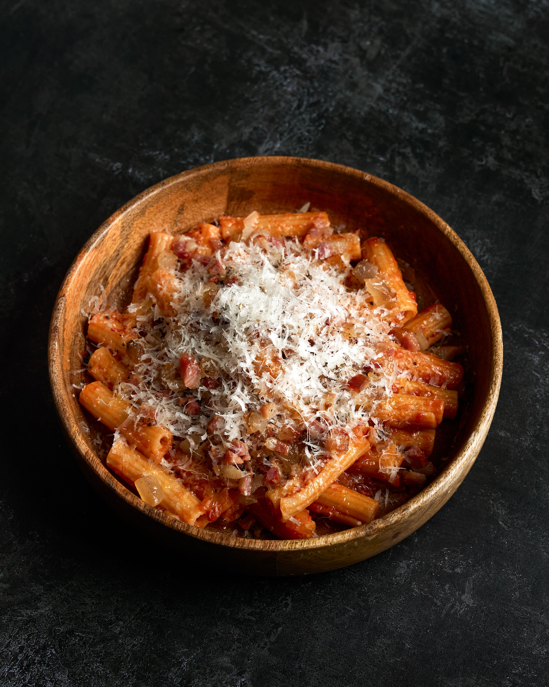

Amatriciana

Pasta all'Amatriciana is a famous traditional Italian pasta dish from the town of Amatrice.
It is a cornerstone of Roman cuisine.
The main ingredients are pepper, guanciale, and tomato sauce, which give it a unique and catchy taste.
It is traditionally served with long pasta like bucatini or spaghetti.
Ingredients
- 320g of pasta
- Tomato sauce
- Guanciale
- Pepper
- Pecorino Romano
Steps
- Bring a pot of salted water to a boil and cook the pasta.
- Crisp the guanciale in a pan along with the pepper.
- Pour in the tomato sauce and let it simmer.
- Drain the pasta directly into the sauce once it is cooked.
- Add the pecorino Romano and cream everything together.
- Plate the dish and top with another dusting of pepper and grating of pecorino cheese
Home